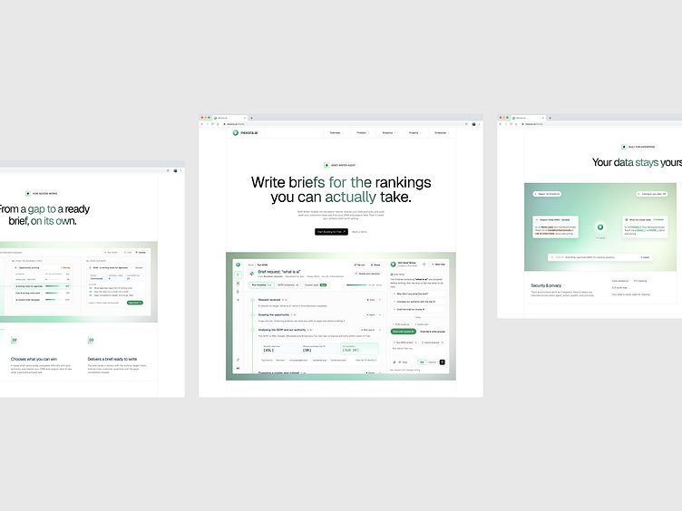

Brief Writer Agent (Product Showcase Page) - Nexora AI
by SlabPixel Designer
AI · SaaSAI · SaaS
AI 简报撰写助手 Nexora：深绿色产品展示页，手机屏里是“Frequently Asked Questions”，主文案“From a gap to a ready brief, on its own”，右侧闪电图标的 AI 仪表盘收着生成进度；AI 工具页用“一部手机 + 一块仪表盘”把“缺口到成稿、全程自动”讲得干净利落。Nexora's Brief Writer Agent: a deep-green showcase page puts "Frequently Asked Questions" on a phone screen under "From a gap to a ready brief, on its own", with a lightning-marked AI dashboard tracking progress beside it; gap-to-brief, fully on its own, told cleanly with one phone and one dashboard.